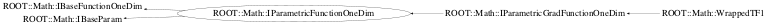

class ROOT::Math::IParametricFunctionOneDim: public ROOT::Math::IBaseFunctionOneDim, public ROOT::Math::IBaseParam
Documentation for the abstract class IBaseParam.
It defines the interface for dealing with the function parameters
This is used only for internal convinience, to avoid redefining the Parameter API
for the one and the multi-dim functions.
Concrete class should derive from ROOT::Math::IParamFunction and not from this class.
@ingroup ParamFunc
This class is also known as (typedefs to this class)
ROOT::Math::IParametricGradFunctionOneDim::BaseParamFunc, ROOT::Math::IParamFunction, ROOT::Fit::Fitter::IModel1DFunctionFunction Members (Methods)
This is an abstract class, constructors will not be documented.
Look at the header to check for available constructors.
public:
| ~IParametricFunctionOneDim() | |
| virtual ROOT::Math::IBaseFunctionOneDim* | ROOT::Math::IBaseFunctionOneDim::Clone() const |
| virtual unsigned int | ROOT::Math::IBaseParam::NPar() const |
| double | operator()(double x, const double* p) const |
| double | operator()(const double* x, const double* p) const |
| ROOT::Math::IParametricFunctionOneDim& | operator=(const ROOT::Math::IParametricFunctionOneDim&) |
| virtual string | ROOT::Math::IBaseParam::ParameterName(unsigned int i) const |
| virtual const double* | ROOT::Math::IBaseParam::Parameters() const |
| virtual void | ROOT::Math::IBaseParam::SetParameters(const double* p) |
Class Charts



Function documentation
double operator()(const double* x, const double* p) const
Evaluate function at a point x and for given parameters p.
This method does not change the internal status of the function (internal parameter values).
If for some reason one prefers caching the parameter values, SetParameters(p) and then operator()(x) should be
called.
Use the pure virtual function DoEvalPar to implement it
return DoEvalPar(x, p)
double DoEval(double x) const
Implement the ROOT::Math::IBaseFunctionMultiDim interface DoEval(x) using the cached parameter values
double operator()(double x, const double* p) const
Evaluate function at a point x and for given parameters p.
This method does not change the internal status of the function (internal parameter values).
If for some reason one prefers caching the parameter values, SetParameters(p) and then operator()(x) should be
called.
Use the pure virtual function DoEvalPar to implement it